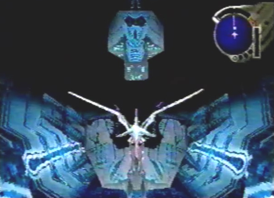
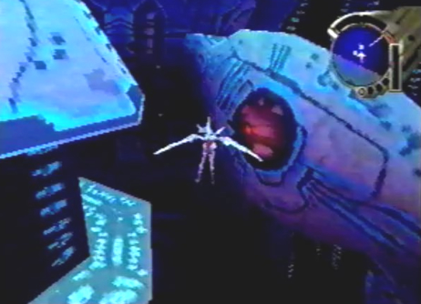

Diary Entry 31: The Tower Visit 2 The Path to Sestren A long and grueling journey awaited us, as we entered the Upper Floors of the Tower. The entrance that Craymen used was blocked, so we had to make our way to the very bottom of the Tower, floor by floor. Azel instilled some confidence in me, by telling me she believed in me. We arrived in front of the first two gates. They were locked. We flew downward. The Tower's defense system immediately identified us as hostile. Directly below us, we encountered something called a Rotor Pile. Azel told me its main purpose was to keep invaders out, and to control the auxiliary power supply. We would have to deactivate it, to proceed lower. Azel soon said that the Rotor pile required a switch, that could be found on 15F. We flew back up to the two gates. Azel unlocked them. We had a choice between 15F West and 15F East 1. 15F West, lead to a locked gate. Azel couldn't open it because the gate was synchronized with the Guardians Reanimation System. Are next move was to enter 15F East 1. We took the elevator at the end of the corridor to 14F East. Another elevator on this floor took us to 15F East 2. We soon found the Rotor Pile # 1 Switch. Now, we could get to the lower floors! We headed back to Rotor Pile # 1, locked onto it directly, and turned it off. Flying downward, we passed three more gates and stumbled upon Rotor Pile # 2. We would have to find the corresponding switch again. The three gates lead to 14F North, 14F East, and 14F West. 14F North, brought us to D Units 11 and 12. 14F East, brought us to an Elixir Maxis. Lastly, on 14F West, we found the Rotor Pile # 2 Switch, and activated it. Next, we deactivated Rotor Pile # 2, continued downward, and entered a gate that brought us to 13F. We then rode another elevator to 12F. As we entered Hangar # 2, we had to fight the Tower's first guardian. They were twin guardians, and formidable opponents at that! I knew we would see more of them, on the lower floors. I told Azel she could choose to leave and go with Gash, if she wanted. Our journey would only get more dangerous. She said it was her decision to go with me. We continued our journey and entered a lower gate, to 11F. At the end of the corridor we flew into a red sensor, and activated the Tower Alarm. We were then forced to fight a group of monsters. The entire corridor was flashing bright red. Luckily, I found a large switch, directly in front of me. Once activated, the alarm turned off. As we flew further along the corridor, we came upon a strange rotating device. It looked as if the top part had to be perfectly lined up with the bottom part. The dragon locked-on to it, and fired a laser at the device. The top part came crashing down, revealing another monster. After making quick work of this monster, we continued down the corridor, and took an elevator to 9F East Passage. This floor had a series of sensor units and rotating devices. We made sure to time ourselves as we flew through the sensors, and lined up the top parts of the rotating devices perfectly, with the bottom parts, to avoid confrontation with monsters. We exited 9F East Passage, and arrived on the Middle Floors. I had never seen this area before. Azel told me that when the Tower became active, the internal structure changed. Flying downward, we found Rotor Pile # 3. We then rotated a giant Rotor Bridge above us, twice, and entered 9F North Passage. At the end of the corridor, we ran into a dead end. Azel pointed out several hanging devices called Energy Pylons. When the dragon destroyed them, a giant opening was made, leading downward to 8F North. It was here that we found a Berserk Medis, and an Elixir Maxis. We continued to take the elevator at the end of the corridor to 10F, proceeded back to the Middle Floors, rotated the Rotor Bridge two more times, and entered the newly revealed gate, to 9F West Passage. Another elevator at the end of 9F West Passage, took us to 8F West Passage. We flew through an inner passage and arrived at 8F East Passage. It was not too long before we came to another dead end, and had to break another set of Energy Pylons. We proceeded downward to 7F East, and took an elevator to 8F East. We found ourselves inside a chamber, where we had to activate a switch. This caused Energy Pylons to lower from the ceiling. Upon destroying them, we descended to 7F South, and rode an elevator to 8F West. This time, we found another Energy Pylon Switch, within a central chamber on 8F West. Activating it caused more Pylons to lower. Pylons also lowered in the left and right chambers next to us. Next, we destroyed the three Pylons in each of the three chambers. We then entered the hole in the northern most chamber, and descended to 7F East. I then activated the Rotor Pile # 3 Switch, returned to the Middle Floors, and deactivated Rotor Pile # 3, found above me. We soon found a rotating red gate, that brought us to 8F North Passage. Another elevator at the end of the corridor, took us to 6F. We proceeded to enter Hangar # 1. It was here that we had to face the last guardian. Sadly, It spent its conscious existence fighting and dying. After the battle, we entered a lower gate and arrived at 5F. We were careful when flying past the rotating sensors, found on this floor. We flew throughout the long corridor and took an elevator to 4F. In an eastern most chamber, we activated the Rotor Pile # 4 Switch, and headed back to the Bottom Floors. The Tower's defense system was now in total disarray, and we were nearing the bottom of the Tower. Once we were to arrive at the very bottom of the Tower, Azel thought it a good idea to use an elevator that could take us directly to the top. Before fighting Sestren, we would leave the Tower, stock up on supplies, and take care of any side quests. We continued downward, and deactivated Rotor Pile # 4. We soon came upon Rotor Pile # 5. Azel told me that the switch was located on 3F, so we flew upwards and entered a gate, taking us directly to 3F. In an eastern most chamber, we activated the Rotor Pile # 5 Switch. Then, we flew back to the Bottom Floors and deactivated Rotor Pile # 5. Below Rotor Pile # 5, was Rotor Pile # 6! Would it ever end!? I knew this had to be the last one. Azel with her helpful advice, said that the switch was also on 3F, but first we had to enter a gate above us to 2F. Within 2F, we found two locked gates. We soon activated two corresponding Right and Left Gate Switches. The Left Gate took us to 3F, where we found a Berserk Vampire gun part. The Right Gate also took us to 3F, where we found the Rotor Pile # 6 Switch. We activated the switch, returned to the Bottom Floors, and deactivated Rotor Pile # 6. Flying downward, once more, we had finally arrived at the very bottom floors of the Tower. Before us, were two gates. 1F North would bring us to Sestren, and 1F West would bring us to the elevator Azel mentioned, that could bring us back to the very top of the Tower. We entered 1F West, and rode the elevator to the top. There were some side quests we had to take care of, before facing Sestren. We exited the Tower via the opening at the top. |
|
| Divine
Overview |
1. As you enter the Tower, you will be on the Upper Floors. You'll have to start from the top and make your way to the bottom. |
|
2. The first two gates you come across are locked, so fly downward. |
|
3. The Tower's defense system will identify you as hostile. |
4. Rotor Pile # 1 is directly below you. There are a total of six Rotor Piles that will halt your progression downward, throughout the Tower. Each one requires you to find and activate a corresponding switch. Once the switch is activated, you can deactivate the Rotor Pile. The Rotor Pile # 1 Switch is located on 15F East 2. Fly upward and access any one of the two gates. Azel will unlock them for you. |
5. The right gate will take you to 15F West. This path leads to an elevator that can take you to the very bottom of the Tower. It can't be accessed as of yet, so take the left gate. |
|
6. You will arrive at 15F East 1. Take the elevator at the end of the corridor. |
|
7. The elevator will bring you to 14F East. Again, take the elevator at the end of the corridor. |
|
8. You will now be at 15F East 2. |
|
9. Activate the Rotor Pile # 1 Switch. Now head back to the Upper Floors. |
|
10. Fly downward and deactivate Rotor Pile # 1. |
|
11. As you fly farther down past Rotor Pile # 1, you will pass three gates and stumble upon Rotor Pile # 2. You will now have to seek out the Rotor Pile # 2 Switch. Fly back up to the three gates. |
12. You now have three options. The three gates lead to 14F North, 14F East, and 14F West (Misnamed as 14F East). 14F North will take you to D Units 11 and 12. 14F East will take you to an Elixir Maxis. 14F West will take you to the Rotor Pile # 2 Switch. After activating the Rotor Pile # 2 Switch, fly back to Rotor Pile # 2. |
|
13. Deactivate Rotor Pile # 2 and continue downward. |
14. You will arrive at a Save Device and another gate. Save your game and enter the gate. |
|
15. You will now be at 13F. Ride the elevator at the end of the corridor. |
16. The elevator will bring you to 12F. Make your way past the long corridor, and enter Hangar # 2. |
17. As you enter Hangar # 2 you will be greeted by the sub-boss: Twin Guardians. Show them no mercy! |
|
18. After the battle enter the lower gate. |
19. You are now at 11F. |
|
20. Throughout 11F you'll run into a series of red sensors. This will set off the Tower's Alarm, and you will be forced to fight Scorpitaras. |
|
21. You will soon find a large switch. Access the switch and the Alarm System will be deactivated. |
 22. Further along the corridor, you'll run into a rotating device. You have to access the top part of this device just as it lines up with the bottom section. If you fail to do this, the device will explode, revealing a Sentinel. Take the elevator at the end of the corridor. |
|
23. The elevator brings you to 9F East Passage. |
24. This floor has a series of sensor units and rotating Sentinel devices. Be sure to time yourself as you fly through the sensors, and be sure to line up the Sentinel devices perfectly. Exit via the gate at the end of the corridor. |
|
25. You are now on the Middle Floors of the Tower. In front of you is a giant Rotor Bridge. Fly downward for now. |
26. You will find Rotor Pile # 3. It requires another switch to be deactivated, so head back up to the Rotor Bridge. |
|
27. Rotate the Rotor Bridge twice, and enter the red gate. You'll arrive at 9F North Passage. |
28. You will come to a dead end, but will be prompted by Azel to destroy the Energy Pylons above you. Do just that and descend into the large hole. |
|
29. You will descend to 8F North. |
30. Be sure not to miss the Berserk Medis and Elixir Maxis you'll find throughout 8F North. Take the elevator at the end of the corridor to 10F. Now proceed back to the Middle Floors, rotate the Rotor Bridge two more times, and enter the gate leading to 9F West Passage. |
|
31. Another elevator at the end of 9F West Passage will take you to 8F West Passage. Proceed past the Inner Passage and enter 8F East Passage. |
32. Break another set of Energy Pylons at the end of 8F East Passage, and proceed downward to 7F East. Take the elevator at the end of the passage to 8F East. |
|
33. Activate the switch to lower more Energy Pylons. Destroy them and descend to 7F South. |
|
34. Take the elevator at the end of 7F South to 8F West. |
35. Activate the Energy Pylon Switch within the central chamber on 8F West, to lower an Energy Pylon. This will also lower Pylons in the left and right chambers next to you. Destroy the three Pylons in each of the three chambers. Enter the hole in the Northern most chamber to enter 7F West (misnamed as 7F East). |
|
36. Activate the Rotor Pile # 3 Switch found in 7F East. |
|
37. Return to Middle Floors. You will be below Rotor Pile # 5. Fly upwards and deactivate it. |
 38. Your next task is to enter the rotating gate below you, to arrive at 8F North Passage. Take the elevator to 6F and enter Hangar # 1. |
|
39. As you enter Hangar # 1 you will have to do battle with the sub-boss: Battle Droid. Defeat the last guardian and continue your journey. |
|
40. After the Battle Droid is defeated. enter the lower gate to arrive at 5F. |
41. Watch out for the rotating sensors. Proceed down the long corridor and take the elevator to 4F. |
42. Activate the Rotor Pile # 4 Switch in the eastern most chamber. Exit 4F and proceed to the Bottom Floors. |
|
43. Deactivate Rotor Pile # 4. |
44. Directly below Rotor Pile # 4, you will stumble upon Rotor Pile # 5. The switch is located on 3F. Fly upwards and enter the gate to 3F. |
45. Activate the Rotor Pile # 5 Switch, found in an eastern chamber on 3F. Next, head back to the Bottom Floors and deactivate Rotor Pile # 5. |
46. Below Rotor Pile # 5, you'll find Rotor Pile # 6. Does it ever end?! Don't worry, this is the last one. The switch is also on 3F, but you first have to enter the gate above you, to 2F. |
47. Found on 2F, are two locked gates. Find the Left and Right Gate Switches, and activate them. The Left Gate will take you to 3F, where you can get a Berserk Vampire gun part. The Right Gate will also take you to 3F where you can activate the Rotor Pile # 6 Switch. After activating the switch, return to the Bottom Floors and deactivate Rotor Pile # 6. Next, fly downward. |
48. This is it! You have a choice between 1F West (misnamed as 1F East) or 1F North. 1F North will bring you to Sestren. We don't want to go here just yet. 1F West will take you to the elevator I mentioned earlier, that was previously inaccessible. This elevator will take you to the top of the Tower. We have some side quests to complete, so enter 1F West, take the elevator to the top of the Tower, then exit the Tower via the opening at the top. The dragon's ultimate form awaits! |